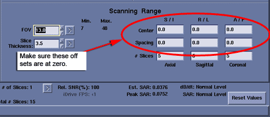
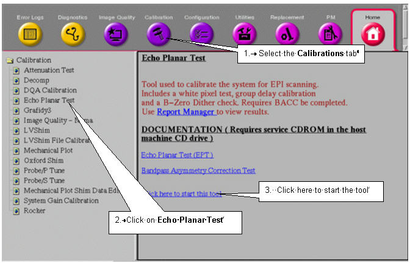
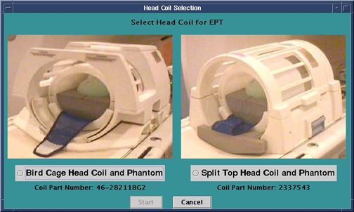

Operating Documentation
Direction 5133315-3, Rev# 14
Signa EXCITE HD 1.5T Service Methods
Module Version 5.0, Version Date 6/2/10
Operating Documentation |
| Required Persons | Preliminary Reqs | Procedure | Finalization |
|---|---|---|---|
| 1 | Not Applicable | 2 hours | Not Applicable |
| Item | Qty | Effectivity | Part# | Manufacturer | |
|---|---|---|---|---|---|
| 100 mm Sphere Phantom for 1.5T | 2 | - | 46-317586G1 | - | |
| EPI Foam Positioner, Body | 1 | - | 2170481 | - | |
| Grafidy Base Plate | 1 | - | 46-271410G1 | - | |
| EPI Head Loader Positioner | 1 | - | 2291292 | - | |
| Head TLT Loader Positioner | 1 | - | 5110241 | - | |
| Head Loader | 1 | - | 46-287899G1 | - | |
| ||||
| Poison hazard! | ||||
| 1.0T and 1.5T Phantoms contains nickel, a suspect carcinogen. | ||||
| Dispose of as a hazardous waste according to state and federal regulations. |
| ||||
| Poison hazard! | ||||
| 0.7T and 3.0T Phantom contains Silicone. | ||||
| Dispose of as a hazardous waste according to state and federal regulations. |
| Condition | Reference | Effectivity |
|---|---|---|
For HDe 1.5T, it is not necessary to perform the Bandpass Asymmetry Correction Tool (BAT) procedure. | - | - |
EPT combines the functionality of the current B0 Dither Calibration, Group Delay Calibration and B0 Image Test into a single tool with a simple user interface. The output is suitable for remote support access, trending, and automatic checking of results against acceptance limits. In addition, EPT automatically updates the EPI calibration files when authorized by the user.
For TwinSpeed, EPT is run for each Grad Mode, Whole-Body (WB) and Zoom (ZM).
Both Grad Modes can be selected in a single pass, but both require calibration at least once per installation and during any other routine system tests.
| NOTE: | Any time a change is made to the RF Chain hardware and once per installation, perform the Bandpass Asymmetry Correction Tool (BAT) before running this calibration. (For HDe 1.5T, it is not necessary to perform BAT.) |
Click on [New Pt], and enter: geservice for the ID.
Place an EPI foam phantom holder and a 100 mm sphere phantom and phantom loader in the head coil as shown in Illustration 1. Landmark on the center of the sphere, but do not Advance to Scan.
Illustration 1: EPI Phantom Positioning in Old Head Coil

Illustration 2: Landmark Marker

Place an EPI foam phantom holder and a second 100 mm sphere on the Grafidy baseplate as shown in Illustration 3.
Move the table into the bore to 1100 mm from landmark.
Slide the Grafidy base plate so the center of the 100-mm sphere is at the axial alignment light, and then press the [Move to Scan] button.
Illustration 3: Landmark Second Phantom

| NOTE: | When using the old head coil
shown in Illustration 1, make sure phantom placement is correct prior
to starting EPT by performing a 3-plane localizer scan. Before running
the scan, make sure that the offsets are set to zero as shown in Illustration 4. Illustration 4: Scanning Range Offsets  |
From the Service Desktop, start the Service Browser if not already open. Follow the instructions in Illustration 5.
Illustration 5: Starting EPT

Select the Head Coil being used. (See Illustration 6.)
Illustration 6: Select Head Coil to be Used

Click the [Start] button. The Echo Planar Test Window will display as shown in Illustration 7.
Illustration 7: Echo Planar Test Window

For TwinSpeed, the Grad Mode will display with three possible entries. (See Illustration 8.)
Illustration 8: Echo Planar Test Window with Grad Mode Option

For calibration, set the Select All Tests option to Yes (default is No). For troubleshooting, select individual tests as desired.
| NOTE: | When running EPT with Grad Mode = Whole & Zoom and
Run All Tests selected, two separate files (EPT.ZOOM and EPT.WHOLE)
are created in /usr/g/service/cclass/etp when
the scan is complete. However, the results in the status box of the
EPT test screen will only show the last coil mode run and not both.
Therefore, it is possible to have a failure in the first mode run
that is not reported. To work around this problem when running EPT tests, select one mode at a time. Run either Zoom or Whole and view the results. Next, run the remaining mode and view the results. Another option is to run Whole & Zoom mode at the same time and use Report Manager to view the EPT.ZOOM and EPT.WHOLE results files. |
There are four option buttons on the screen that must be chosen before starting EPT:
Clicking the [Multi Passes] button and entering an integer in the text box will perform more than one pass of the tests.
Selecting [Config Update] before starting EPT will ensure one or more of the selected tests automatically update the config files with new calibration data if the new data is within specification.
Select a Test Purpose from the pull-down menu. (See Illustration 8
Two lines of comments can be entered, if desired. If no comments are entered, the text, NO COMMENT will be entered into the results file.
If the B-zero Image fails during the EPT, quit the EPT and run the Image-Based Short Cross Term Eddy Current tool. This tool may reduce EPI ghosting and is designed to specifically work in conjunction with EPT. If B-zero Image passed, proceed to Test Termination.
| NOTE: | Consider running this test even if the B-zero image passed. Based upon past experience, this may improve image quality. |
Quit the EPT.
Open the C-shell by clicking on the [C Shell...] button in the Service Desktop Manager, and typing: /usr/g/bin/runsct
When the tool's window displays, click [Apply and Scan].
The tool checks the eddy current compensation parameters first. If the long cross-term compensation is not significant, the following message displays: The long xy alpha value (2 terms added) is: value. The correction would be too small to make improvement. Short cross term correction is not required. This tool does not need to be run.
Click [Exit]. The tool quits and the cross-term compensation is removed. Troubleshoot the system for other ghosting sources. (See Troubleshooting EPI Ghosting Problems.)
If the system determines that correcting the short cross -term values may fix the ghosting problem, compensation is applied and the B-zero Image scan starts with the new values. Data collection takes 10-15 minutes and the resulting ghosting level is measured and displayed.
| NOTE: | Clicking [Abort] prior to completion of the test stops data acquisition and removes the short cross-term compensation values added by the tool. |
If the B-zero Image passes, the procedure is complete and the results are displayed.
Click [Exit] and re-run the EPT tool. (See Illustration 7.)
When running the tool, go to the Body section of the Test Options page and click Off next to the B-zero Image. (See Illustration 7.) This saves time by not rerunning this part of the EPT.
If the B-zero Image results are not within specification, the cross-term compensation is removed. Click [Exit] and troubleshoot the system for other ghosting sources. (See Troubleshooting EPI Ghosting Problems.)
Once EPI ghosting problems are brought into specification, rerun the EPT and continue to the next section.
If [Quit EPT] is selected, a confirmation window displays.
If the EPT process is not shut down in an orderly manner, the service protocol directions may need to be reset. This can be done by opening a C-shell and typing the following:
cd /usr/g/service/cclass/ept<Enter>
resetept<Enter>
Reset the TPS to bring the system back into a known mode.
Do a test scan to ensure the scanner is working properly before customer turn over.